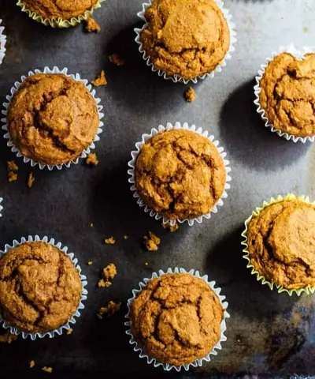

Vegan Pumpkin Muffins with Bananas

Ingredients
- 1 1/2 cup whole wheat flour
- 2 tsp baking powder
- 1 tsp baking soda
- 1/4 tsp salt
- 1 tsp cinnamon
- 1/4 tsp nutmeg
- 1/4 tsp cloves
- 1/4 tsp ginger
- 1/2 cup brown sugar (or coconut sugar for refined sugar free)
- 2 whole bananas
- 1 cup canned pure pumpkin puree
- 1/4 cup unsweetened applesauce
- 1/4 cup unsweetened almond milk
Steps
- Preheat oven to 350 F.
- Blend two large bananas in a blender or food processor until completely smooth.
- Add applesauce, pumpkin, and almond milk. Blend until combined.
- Whisk flour, baking powder, baking soda, salt, cinnamon, nutmeg, cloves, and ginger together in a large bowl.
- Whisk in brown sugar and set aside.
- Pour the wet ingredients into the bowl with the dry ingredients.
- Stir until just combined. Do not over stir.
- If you'd like, you can fold in 1/2 cup of chocolate chips, or chopped nuts.
- Using a measuring cup scoop 1/4 cup of batter into muffin cups filling 3/4 of the way full.
- Bake 18-20 minutes or until a toothpick inserted into center comes out clean.
- Cool in muffin trays for 5 minutes. Remove and allow to cool completely on metal cooling rack. Store at room temperature.
Recipe by Anjali Shah · The Picky Eater, from The Picky Eater. Saved here for personal use; the original has the full notes, tips and photos. Open original